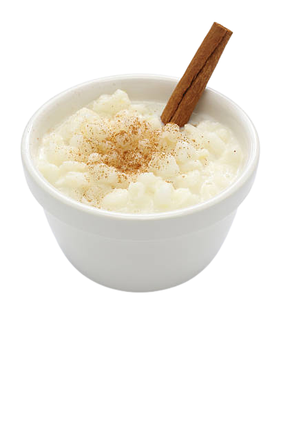

Canjica
É um prato clássico das festas juninas
Porções 1
Ingredientes

- 500g de Canjica Branca
- 1 Vidro de Leite de Coco
- 1 Litro de Leite
- 1 Canela em pó
- 1 Lata de Leite Condensado
- 50g de Coco Ralado Úmido e Adoçado
- 8 Colheres (Sopa) de Açúcar
Preparo
- Lavar a canjica em água corrente
- Deixar de molho por aproximadamente 4 horas com o açúcar.
- Cozinhar na panela de pressão com 2 litros de água por, aproximadamente, 20 minutos ou até que esteja macia.
- Coloque em outra panela se necessário maior, acrescente o leite, o leite de coco, o leite condensado e o coco ralado.
- Deixe ferver por 10 minutos mexendo sempre para não grudar no fundo da panela.
- Desligue o fogo quando estiver bem cremosa.
- Polvilhe a canela em pó.